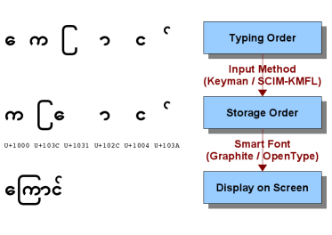

A Guide to Using Myanmar Unicode
Introduction
Overview of Technical Issues
Most existing Myanmar fonts use the Windows 1252 Code Page encoding, but substitute Myanmar glyphs* in place of the English (Latin) glyphs. Unfortunately there is no standard for which Myanmar glyphs go with a particular Latin character, so many fonts are incompatible with each other. Some Myanmar consonants, semi-vowels and vowels can have different shapes according to context and so each of these is represented as a different character in the font. This means that a normal computer keyboard is unable to type several of these characters with the normal key and key + Shift combinations. Instead the user must type the character code by hand or use Ctrl and Alt keys*. The former is difficult to remember and the latter is problematic because it prevents keyboard shortcuts being used for menus etc.
The Unicode Code Points for Myanmar are defined in Unicode 5.1 in the code space from U+1000 to U+109F. Unicode always uses the same code point for the same character or semi-vowel, even if it changes shape depending on the context. Invisible codes such as virama are used to specify the characters in their different forms. This means that complex rendering software is needed to choose the right glyph. There is no longer a 1-to-1 relationship between code point and glyph.
Another consequence of using Unicode is that the order you type and the order you store Myanmar characters in your file are different. This means you need a smart keyboard technology (an Input Method) to convert what you type into the correct sequence of Unicode characters. The difference between the typing order, the storage order and the order that glyphs are displayed on screen is summarized in the figure below for the Myanmar word for a cat.

Changes to the way Myanmar Unicode is encoded
A careful analysis of the Unicode 4 standard will reveal that there are some ambiguities, especially involving the handling of Kinzi င်္◌. There were a number of suggestions for how to resolve these ambiguities without any additions to the standard. (For example, Unicode Technical Note 11 Representing Myanmar in Unicode). However, it was agreed to modify the standard by adding additional characters for Yapin, Yayit, Wasway, Hatoo ◌ြ ◌ျ ◌ွ ◌ှ (U+103C - U+103E). These changes were accepted in Unicode 5.1. (The associated proposals were: N3043, N3044, N3142, N3143.)
The Unicode 4 Standard suggested using a Zero Width Non-Joiner Character U+200C to distinguish between a visible killer ◌် and the virama character U+1039 used to prefix a consonant when it is rendered underneath the line. e.g. ◌္က. However, this caused lots of problems because ZWNJ is ususally used only in Right to Left languages and is often stripped out by software like javascript. A separate character U+103A has now been added to represent the visible killer ◌်. Thagyi ဿ now also now has its own code point U+103F because သ္သ is found in some ancient Bamar texts.
 This website is licensed under a Creative Commons Attribution-ShareAlike 2.5 License except where another license is explicitly stated.
This website is licensed under a Creative Commons Attribution-ShareAlike 2.5 License except where another license is explicitly stated.
For more information သံလွင်